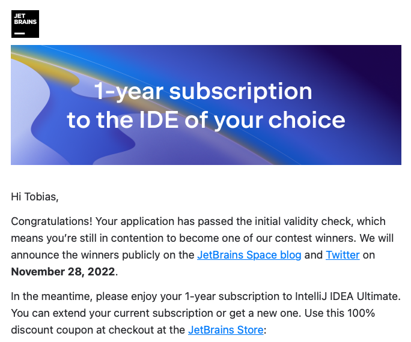

I mentioned in an earlier post that I plan to participate in JetBrains Space app contest. Not because I’m a heavy user of their platform, rather more I needed some real use case to dig deeper into Kotlin.

In a retrospective manner, the coding of the app was the simplest of all tasks. Space does not support hosted apps, yet. That means I had to “learn” how to dockerize my app (On this Day) which is a ktor server project, gets the required https into it and a little bit of ORM was also on my todo list – you must manage the auth tokens of all connected Space instance by yourself (I really hope this will change in future).
Nevertheless, I sweared a lot and without the help of my friends I would not be able to write this post because I would rage-quitted the contest.
Thanks to David, Phil and finally to Denis from JetBrains who had a lot of Slack mentions on Beginner’s questions.
I really hope that there are far more contributions to the contest than I saw – and more important, apps that helps the users and not just dumping facts of the day into the chat.
PS: Yes, I got a year-long subscription of IntelliJ Ultimate because of my app submission. Let’s see what happens next!
Back